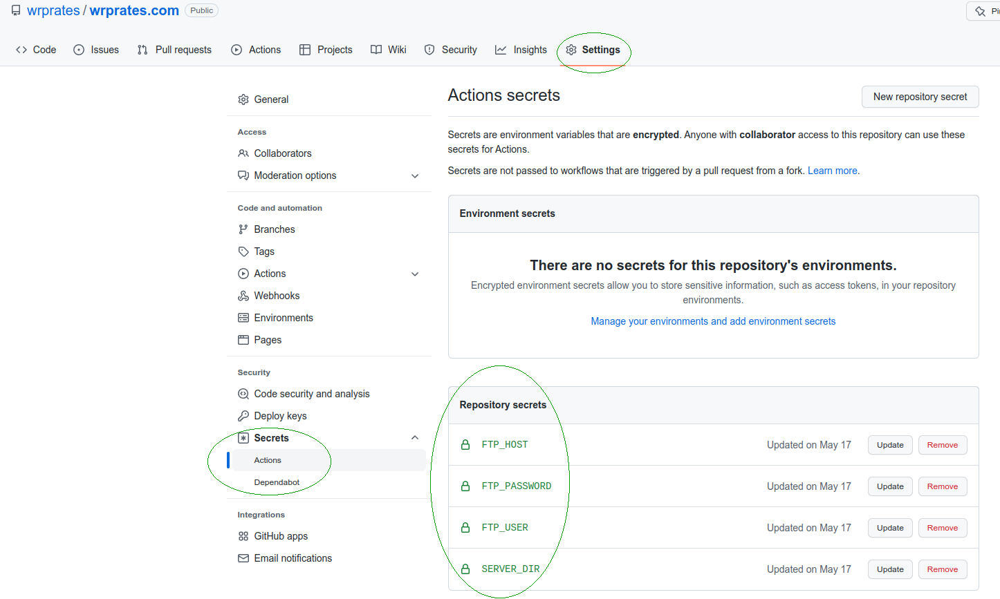

Anyone who works with data analysis and wants to share content faces some limitations from the traditional tools to build a website. One of the main reasons is the difficulty of sharing the results of chunks of code without needing to copy and paste images.
For example, suppose you are a data scientist and use Python or R to build interactive charts and tables in your work. In that case, it might be difficult to be able to publish this kind of result on a website using the traditional platforms.
There are already many available solutions that facilitate this job. But here I want to draw attention to Quarto.
What is Quarto?
Quarto is a great reporting tool, which is supported by RStudio. Its own definition is:
Quarto is an open-source scientific and technical publishing system built on Pandoc.
In Quarto, you can “create dynamic content with Python, R, Julia, and Observable”.
In other words, with Quarto, it is possible to create reports using the same syntax used to build RMarkdown documents, but in Quarto there are more possibilities when compared with RMarkdown.
One of the biggest Quarto advantages is that it is a multi-language platform. Besides that, RStudio announces that Quarto is the “next generation version of R Markdown”.
Basic workflow for a Quarto website with automated deployment
After taking a look to Quarto documentation and watching a video (Pt) about automated deployment with Github Actions, I realized that it could be easier than I thought to set up a personal blog with the requirements that I had for this purpose.
So, the workflow I built using Quarto had as a result this website (check the Github repo), and works like described below:
- Write a post or build a static page (locally).
- Render the website (locally).
- Push it to Git.
- After a merge in certain branch, automate the deployment process (upload the files via FTP).
Steps to create an automated Quarto website
Quarto documentation is great. Basically, all you need to know how to create a website with Quarto is to read this session in their website.
Below I am sharing the main commands that you will need, and also the needed information to set up the automated deployment.
Step 1. Download and install Quarto
If you don’t have Quarto installed yet you can follow the steps here.
Step 2. Build a Quarto website or blog
After having installed Quarto, it is needed to run on terminal the following code to create a Quarto website:
quarto create-project mysite --type websiteIf your website will be a blog, so you may prefer to use the following code:
quarto create-project myblog --type website:blogThis code will create a basic folder structure with the main files needed to start customizing your website.
Step 3. Create a repo on Github
To be able to benefit from Github Actions, which we will use to automate the publishing workflow, you will need to create a Github repository for the project.
In this post I expect the reader to have at least minimum experience with Git (create repositories, understand how branches work, git push, git pull.)
Step 4. Set up Github Actions
We will need to go to the Github Actions Marketplace and look for “FTP Deploy”, or just click here.
In fact, to use this Action we will just need to copy and paste the .yml file as it is in the example from the Action’s page.
Inside your project, the .yml file needs to be located in the path .github/workflows/main.yml
However, I did some changes, mostly based on this great video about this topic, but it is in Portuguese. I also did some other changes that were also needed to allow working with Quarto files structure.
on:
push:
branches:
- main
name: 🚀 Deploy website on push
jobs:
web-deploy:
name: 🎉 Deploy
runs-on: ubuntu-latest
steps:
- name: 🚚 Get latest code
uses: actions/checkout@v2
- name: 📂 Sync files
uses: SamKirkland/FTP-Deploy-Action@4.3.0
with:
server: ${{ secrets.ftp_host }}
username: ${{ secrets.ftp_user }}
password: ${{ secrets.ftp_password }}
local-dir: ./_site/
server-dir: ${{ secrets.server_dir }}Basically what these commands are doing is updating the files in the website Host after any push on main branch of the project.
Details about Github Secrets
Here we are also using Github Secrets for the Host information.
Github Secrets will allow us to add private information, like passwords and usernames, without worrying about security.
They’ll be securely saved on your Github account and you will call the variable that contains the “secrets” in your code. So this sensitive information doesn’t need to be hard coded.
Check out the screenshot below to see what Github Secrets looks like. You need to record them as they are being called (e.g. ftp_host for secrets.ftp_user). Register the secrets with small letters and don’t worry if they appear with capital letters (see screenshot).

Some general comments:
- The only needed information here is
ftp_host,ftp_userandftp_password. They are the same that you use for other commom FTP services. - I added
local-dirbecause of Quarto files structure. - I used
server-dirto specify the folder where the website will be (e.g.public_html).
Final comments
After all the steps above you are ready to git push your changes and submit a Pull Request to merge your local branch with the main branch (if you created a separated branch, which is highly recommended!).
After merging with main, check if the files in your Host were updated. If yes, check if your website is now running on the internet.
I am using Hostgator to host the website. And my first impression is good. The website quickly updates after the merging.
Did you like this post? Leave your comments below and share your experience if you try to set up a website as I described here.